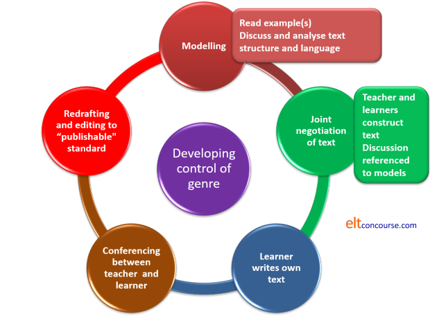

Writing in EAP: understanding generic structures

When texts share the same
general purpose in the culture, they
will often share the same obligatory
and optional structural elements and so
they belong to the same genre or text type.
(Butt
et al, p9)
This guide focuses in particular on the generic structures that
most EAP learners will need to produce. These structures are
not confined to EAP, of course, as they are conventional across the
whole speech community. In particular, some public
examinations in General English require adhesion to a conventional
structure and staging.
This guide is concerned with:
- Identifying the generic structures which EAP students may be required to employ
- Identifying within those genres (or text types, if you prefer) the conventional way(s) in which information is staged
- Identifying the critical language structures and lexis within each genre that the EAP student needs to master
Student writing will usually fall into one of the categories
mapped out below and their
staging will be predictable and conventional. Straying from
conventional generic structure will result in an unacceptable loss
of coherence for readers who operate in an English-speaking
environment.
It is important to recognise that the conventional staging set out
here concerns life in an English-speaking environment.
Conventional staging of generic categories is culturally variable so
this has to be taught, not assumed.
 |
In which genres will EAP students need to write? |
Probably in five and they may be required to embed one generic
form in another so the variations are large but not unpredictable.
Here are the five with their purposes outlined:
- Recount
- A recount is intended to set out clearly what has happened.
It is the format for reporting back on experiments conducted,
surveys carried out and work done.
The same structure is often used in retailing anecdotes and stories in informal speech but that is not something that concerns us here. - Procedure
- A procedure text (spoken or written) is intended to explain how something is done. This form of writing may well be embedded in a different structure because digressions to explain how something works are common in other forms of writing. We'll come to that.
- Information report / Explanation
- An information report is intended to present data logically and has a simple structure although the ordering of information needs careful attention. This form of writing is common when a student is asked to summarise the results of reading and research to demonstrate understanding.
- Discussion
- A discussion is intended to present both sides of a
controversy and is more common in the humanities than the
sciences.
This kind of text is, naturally, what is required when departments issue essay titles containing the word Discuss. Often, within a discussion, it is necessary to embed other text forms as digressions or explanation phases. - Exposition
- This is a less likely format for a full essay but may form part of a thesis or statement of view after an information report, for example. In this, writer presents a one-sided argument, not discussing an issue objectively from both sides but attempting to persuade the reader.
There are some commonalities:
- All academic writing, whatever its structure and topic, needs to be clearly signposted and ordered for the reader to make sense of the progression of the argument or the presentation of information.
- Most writing of this type will begin with an introduction setting out the definition of the theme and saying what will be covered in what follows (as well as what may be excluded for any reason).
- Most writing of this type requires a conclusion alluding to the main points and, sometimes, mapping a way forward.
- Logical staging is essential to maintain coherence: switching stages around or mixing them up will result in incoherence.
We can take the five structures in turn, considering their
staging.
Then we can take a look at the critical language systems learners
need to master to successfully use the conventions.
At the end, we'll turn to the question of embedding generic
structures within each other to signal changes of topic and
digressions.
 |
Staging |
- Recounts
- Because recounts essentially tell a story, they tend to take
on a chronological structure and are mostly written in past
tenses. It should be noted that recounts are not the same
as narratives or stories, however. Narratives usually
contain a complication to be resolved (hence their fairytale
nature). Recounts are more sober and objective.
The example we will use here is a recount of how a survey was carried out but the form will be unchanged for recounting how an experiment was conducted or a piece of design work accomplished.
Recounts are often inserted at the beginning of a discussion of the outcomes of the survey or experiment to orientate the reader and describe the background.
Recounts work this way:- Orientation (what was done, when and why):
For example:
This survey was carried out to discover how the views of workers in the industry influence management decisions over a period of three weeks in ... - Records of events (in chronological order):
For example:
The first polling of views took place in ... and was designed to provide data to refine the second stage of the survey
Next, ...
Finally ... - Reorientation (a summary referring to what was done):
For example:
In all, over 300 sets of data were gathered to show whether and how the views have been influential in ... - Coda (evaluation of results):
For example:
The results are as yet not firm evidence for the theory that ...
Further studies will be needed to know if ...
- Orientation (what was done, when and why):
- Procedures
- A procedure text is intended to explain how something is done,
not what was done. In other words, it acts as a handbook
from which anyone else could perform the procedure successfully
and often answers an essay rubric contain the word Explain.
By their nature, therefore, procedure texts are often written in
the present tense to imply that this is how
something is done not how something was
done.
It works like this:- Goal (what the procedure is intended to achieve):
For example:
This procedure is intended to show how library resources can be shared more widely in educational institutions. - Materials (what is required):
For example:
IT resources, adequate staffing and a reliable on-site digital information distribution system needs to be in place before any further consideration can be given to a project. - Steps (in a logical sequence):
For example:
The first step is to set aims for the project in terms of the numbers of participants, the range of resources that will initially be available and the types of data registered users will require.
Secondly, ...
Thirdly, ...
...
Finally, ...
- Goal (what the procedure is intended to achieve):
- Information reports and Explanations
- An information report is an extremely common form of student
essay because it demonstrates reading and research and tells the
tutorial staff what has been learned. It is, of itself, a
form of learning exercise. The tutors, after all, are
familiar with the topic so it is also an assessment tool.
An information report can also take the form of an Explanation. In that case, the text's purpose is to explain how something happens. This is also the format in which so-called cause-and-effect texts are produced. These texts follow the same pattern but have an alternate presentation of the data, divided into sections Cause 1 → Effect 1, Cause 2 → Effect 2 etc. More rarely, the ordering is reversed to list the effects first and link the causes to them in the following text.
It works like this:- General statement (identification of the subject):
For example, for an Information report:
The origins of the English language can be traced to the early 5th century when Frisians, Saxons, Angles and Jutes first began to invade the south of Great Britain.
Or, for an Explanation:
Sand dunes track across territory in predictable ways. - Description. These data need to be logically categorised.
Here, because of the topic, the most logical system may be
chronological but different topics will call for varied
ordering.
For example:
A chronological approach to the subject shows that ....
By the 6th century, ....
Thereafter, ...
Towards the end of this period ...
Or, for an Explanation with a Cause → Effect structure:
Sand is blown by the prevailing wind, is stripped from the base of the dune and deposited over the crest. In this way, the dune slowly tracks across the landscape ...
Then the writing will follow the pattern set out in the introduction. Straying from it will confuse and irritate the reader. - In academic texts, there will often be a
conclusion or coda in which the writer sums up the most
important information and suggests a way forward to gather
more.
We can see, therefore, that ...
More research is needed to discover ...
- General statement (identification of the subject):
- Discussions
- A discussion is intended to present both sides of a
controversy and is more common in the humanities than the
sciences.
This kind of text may stand alone or be part of any of the other text types so far considered. In some cases, discussion routines may be inserted at various stages of, for example, a recount of an experiment or survey or an information report when a summing up of the information presented so far is required or the methodology needs to be discussed.
It has two possible structures because stages two and three may be combined with the arguments for and against presented in pairs. It works like this:- Issue (what I am discussing):
For example:
Whether the evidence for mass extinction around this time in earth's history is reliable is mostly an issue of ... - Arguments for (each point requires some
exemplification):
For example:
Some authorities, ... and ... for example highlight the parallel findings of ... - Arguments against (exemplified):
For example:
Others, particularly researchers in ... point to large discrepancies between ... - Coda (this is an optional stage)
For example:
While no firm conclusions can yet be drawn, it seems eminently arguable that ...
- Issue (what I am discussing):
- Expositions
- We have noted that this form of text is less likely to
be required in a full essay format but exposition may be
asked for in prepared answers to tutorial questions or as
part of a longer text whose overall structure is discursive
rather than argumentative.
The staging is similar to that of a discussion text except that the thesis to be argued comes at the beginning and one set of arguments, either those for or against, is excluded. The final coda is replaced by a statement reinforcing the speaker's thesis and is usually not optional. Like this:- Issue (what I am arguing):
For example:
The case for asserting that second or subsequent languages cannot be learned by adults in the same way as their first language was acquired is unanswerable. - Arguments for the thesis (each point requires some
exemplification):
For example:
There is, firstly, no reliable evidence to show ...
In the second place, research by ... has leads firmly to the conclusion that ...
Furthermore, ...
...
And finally, ... - Coda (this is not an optional stage)
For example:
From the evidence presented here, it seems perverse not to accept that ...
- Issue (what I am arguing):
The first danger many EAP students need to avoid is to slip from a discussion format into an exposition. The use of terms such as Obviously, ..., Clearly, ..., It therefore follows that ... etc. is a sure sign that this is what has happened. Equally, the insertion of deontic modality (we should, we must, it is vital to etc.) is another sign that the writer is indulging in exposition rather than discussion. See below.
We shall consider below what the implications of understanding text staging are when it comes to planning, drafting and reviewing writing.
 |
Theme and rheme: structure within structure |
The issue here is maintaining coherence within the sections of a text.
You are probably familiar with the idea that the first sentence of many paragraphs in written texts signals the writer's theme for the paragraph. This is often called the 'topic sentence'.
Here is an example from Wikipedia concerning the formation of sea and land breezes. You will recognise instantly now that this is an Explanation text. Sentence numbers have been inserted {n} to make the analysis that follows easier to understand. Otherwise the text is unchanged.
{1} A sea breeze or onshore breeze is any wind that blows from a large body of water toward or onto a landmass; {2} it develops due to differences in air pressure created by the differing heat capacities of water and dry land. {3} As such, sea breezes are more localised than prevailing winds. {4} Because land absorbs solar radiation far more quickly than water, a sea breeze is a common occurrence along coasts after sunrise.
Here, the writer of this has maintained cohesion with the use of a single pronoun reference. The writer has, more importantly, maintained coherence by logically linking the text together so the reader is led through it.
- The first clause sets the scene and is called the theme
(it's the nominalised A sea breeze
or onshore breeze ...).
The rheme of that is is any wind that blows from a large body of water toward or onto a landmass;
This is the topic sentence and carries the essential definition. - This rheme functions as the theme of the following sentence
(in this case, separated by a semi-colon which could just as
well be a full stop). The theme of this part is just it.
This has the rheme develops due to differences in air pressure created by the differing heat capacities of water and dry land. - The same theme, sea breezes, is used for the next sentence and that has the rheme, are more localised than prevailing winds.
- Now the writer uses the uses part of the rheme of sentence 2., land, as the theme of sentence 4.
The text continues to contrast sea and land breezes before returning to the rheme of sentence 3 as the theme of a sentence concerning prevailing winds.
This is how well written paragraphs hang together and guide the
reader smoothly through the text. There is much more to it
than this and not all texts will conform to such a neat structure.
It is possible, for example, for theme 1 to have rheme 1 and for
that to become theme 5 later in the text and so on. Theme-rheme
structures can look nice and tidy, like this:

with each sentence neatly divided into a theme and its rheme,
following a simple format. This need not be the case because
coordinated clauses can have their own internal theme-rheme
structure. For example, the compound-complex sentence such as
The accuracy of the reading was compromised and this led to some reduction in reliability which led to this experiment being repeated and the new experiment produced better results. These results ...
has an initial theme (in red)
with its rheme (in black)
becoming a new theme after the conjunction (this) with a new rheme (in
blue) which is the theme of the following clause (underlined).
This has a rheme (in green)
which forms the theme following the conjunction which has a rheme (in
pink) forming the theme of the next sentence.
That's quite complicated but not impossible for learners to notice
and emulate.
The situations can also be more complex, like this:

where:
Theme 1 has rheme 1 which becomes theme 2 with a new rheme 2.
Rheme 2 becomes both theme 3 and theme 4.
Then rheme 3 becomes theme 5 and rheme 4 becomes theme 8 and so on.
The more the theme-rheme structure is disturbed, the more difficult
the text is to navigate and comprehend and the more lost the writer
can become.
At the beginning of a writing course, learners should
be encouraged to link things simply. Later, they can
experiment with making rheme 2 into theme 6 and so on.
They can't do this unless they have been led to notice how
theme-rheme structuring works, of course, and that is a matter for a
bit of classroom text analysis to which we shall come.
 |
The language |
We now need to consider the typical language forms and exponents
writers need within the text types we have considered. The
purpose of texts has great influence on these.
We have already seen for example that recount texts are
predominantly in the past tense whereas procedures are normally
couched in the present because their purposes differ.
Here are some more language nuts and bolts to consider although no list could be exhaustive:
| Text type | Purpose | Typical language required (and needing to be taught) |
| Recount | To set out a chronologically ordered set of events |
Adverbials: sequencing conjuncts: firstly, subsequently, finally etc. prepositional phrases of time and location: following the completion of, at the end of this step, in the laboratory, in field research etc. processes: by measuring, by asking, with dedicated software etc. Clausal subordination: Once this step had been accomplished, After collating the data etc. Past tense forms of material process verbs: investigated, counted, analysed, gathered etc. |
| Procedure | To provide directions for accomplishing something | Reason subordinating conjunctions:
in order that, so that etc. Sequencing conjuncts: firstly, subsequently, finally etc. Adverbials: time: for two hours etc. manner: carefully, precisely, by hand, with a micrometer, on the telephone, firmly etc. place: between the electrodes, in the furnace etc. Imperative and present forms of material process verbs: avoid, measure, re-set, calibrate, investigate etc. |
| Information report | To describe phenomena systematically | Superordinate expressions:
a kind
of, an example of, a subset of etc. Relational verbal processes: have, be, contain, involve etc. Material verbal processes: hunts at night, breaks down in sunlight etc. (Verbal processes are normally present tense forms.) Nominalisation: The most obvious examples of the nature of the event ... etc. Adverbials will rarely be used with the exception of: time: since the beginning of, each winter etc. place: in the north of the country, westwards from there etc. Relative clauses: an animal which inhabits ..., people who ... etc. |
| Discussion | To evaluate an issue | Epistemic and hedging modality:
may
be considered, might lead to, could be identified as etc. Nominalisation: The most obvious example of the particularly enduring problem is ... etc. serving to depersonalise and appear objective Adjuncts: viewpoint: economically, scientifically etc. focus: chiefly, most importantly etc. Attitude disjuncts: arguably, apparently etc. Conjuncts: enumerate: in the first place, primarily, secondarily etc. rephrase: in other words, put another way etc. equate: equally, likewise etc. showing a result: consequently, therefore etc. replace: alternatively, on the other hand etc. reinforcement: moreover, furthermore etc. concede: nevertheless, although, however etc. summarise: in conclusion, overall, so etc. |
| Exposition | To argue a point | The same language forms as are used
for discussion will also be required here with the exception
that: Concessive and replacement conjuncts, which are used to introduce alternative viewpoints are much less evident. Modality will be deontic rather than epistemic with expressions such as, should, ought to, need to and be well advised to etc. occurring frequently. |
 |
Teaching: a modelling approach |
You can't teach people to write well quickly. Teaching
writing requires a series of connected lessons which build gradually
on what has been covered before. The following is concerned,
therefore, with an approach, not a lesson or even a series of
lessons.
Such a course can be structured in two ways:
- Start from the text types and take each in turn focusing on its typical structure and staging and on its typical language exponents separately.
- Start with structure first and analyse the structure of each text type before going on to repeat the process with the typical language content.
There's no right way (sorry) but the approaches can be combined. Whichever procedure is used, the work starts with analysis and modelling.
 |
Analyse |
Whether you are looking at structure or content, one effective way forward is to start with a model text in the target genre. Choose something easily understood by and relevant to your learners. This is an awareness raising exercise, not an attempt to teach new language from scratch.
- The first thing to do is to get the learners to identify the
text's purpose. This is not as easy as it sounds,
sometimes, because many people are unused to looking at texts
this way.
Given, however, one example of each text type and being asked to match a purpose to the text is a beginning.
Then you can try the exercise again with some other texts and get the learners to recall the categories you gave them to match in the first exercise. - At this stage, you need to focus very explicitly on what phenomena in the text betrayed its purpose. This might be the title, the introduction, the structure of the staging of information, the kinds of verbal processes used and so on. It is usually a combination of signals and learners need to be able to unravel them.
- For text structure and staging:
- Cut up the text into its constituent stages and get the students to arrange it logically.
- Get the learners to match given stage purposes to each part they have put in order. For example, Statement of goal, Personal evaluation, First argument against and so on.
- Get the students to write, individually, on single slips of paper, the first sentence of each stage of the essay they are planning.
- Now get them to exchange the slips of paper to see if their colleagues can identify which sentence belongs in which part.
- Repeat for as many text types as you need to have the learners recognise and produce.
- For some theme and rheme work:
- Highlighting theme-rheme structures in sentences like this is a place to begin. This helps learners to notice how the language is arranged. This arrangement is common to almost all written texts. The texts will be easier to navigate if learners are aware of the organisation. Awareness of organisation will lead to more cohesive texts in their own writing.
- Re-ordering of the sentences of a paragraph can be revealing in terms of getting learners to notice how rhemes become later themes and keep a text coherent.
- As we saw above, Wikipedia is a good source of short, well-written texts which exemplify theme-rheme structures.
- Being alert to failures in theme-rheme structures when you are reading your students' work is also helpful because it allows you to scaffold their efforts by drawing their attention to any breakdown in coherence.
- For typical language content:
- Take the sample text and highlight in different colours typical language uses. For example, present tense material verb processes, adverbials of time, causality signalling conjuncts and conjunctions etc.
- Lead the learners to identifying what the colour-coded bits have in common.
- Teach the forms if necessary. Discuss the effects of each target language item type and its role in the text.
- Get the learners to write some of the content of the essay they are planning using the same (or the same type) of language items.
You can't possibly do the above thoroughly in less than a whole series of writing lessons.
Now we can get on to producing texts.
Produce |
This is another long process.
At the outset, writers need explicitly to be able
to say what the overall purpose of the text they are going to write
is. Getting learners to articulate the purpose is very
valuable because they can then refer to the handout you gave them of
the stages of a text type and make sure that their texts conform.
- At first, narrow down the writing task to each part of a particular text type making sure that the overall purpose of the text is clear and that the stage of the text also has a clear aim which the learners can articulate.
- Remind the learners of the types of language (tenses, adverbials, verbal processes, lexis, modality [or its lack], conjunctions etc. that they need to deploy in this text type.
- Carry out a process approach of drafting, redrafting, getting suggestions from colleagues and so forth until the text, with your help, fulfils its particular function and fits within the overall text purpose.
- Move on to the next stage of the text and repeat until a whole text, properly staged and with appropriate language forms is produced. This will take a long time so be thorough and patient. Academic writing in a foreign language is hard.
- At the end, put away the text and focus on hedging, modality and nominalisation strategies for a lesson or two or three or four ...
- Return to the texts and, with the latest series of lessons in mind, get the learners to hone them with suitable hedges and modal expressions.
(See the other guides in this section for help with hedging, modality and nominalisation.)
Before setting out to plan and write an essay, it helps, at least
initially, if the learners can draw a diagram of how their essay
will develop from its title. Here's an example of a discussion
text and another for an information report:

It doesn't take long to produce drafts like this and they will help learners stay on track. At the beginning of a writing course, it may even be appropriate to give the learners a diagram to work from.
Combining text types |
Longer documents, such as theses, dissertations or end-of-year
papers may require the writer to combine one or more of these text
types because different parts of the text are performing different
functions.
For example, a recount may be inserted easily into an information
report to inform the reader how the information was obtained.
Likewise, a procedure (or proposed procedure) may follow an
information report to set out what information is still needed and
how it might best be obtained.
A recount may be followed by a discussion of the outcomes of a
survey and so on.
However, unless the writer has a good grasp of which text types
conform to which purposes before attempting to do this, the result
is often incoherent chaos.
When writing lengthy multi-purpose texts, therefore, learners will
need help. A planning stage in which the learners draw a
diagram of how their text will work is valuable. Such a
diagram might look like this for a text which is fundamentally an
information report concerning a survey and its results but which has
an inserted discussion of the methodology used for the survey.
As you can see, and so can the learners if they produce charts like this for themselves, the overall structure of the information report has been maintained and so has the structure of a discussion. All that has happened is that the discussion is inserted by way of a digression from the information report.
Here's a summary of the process of using a genre approach to
teaching writing skills for any purposes (not just EAP).

There are two short tests to see
whether you can match structures and purposes to genres.
It might be helpful if your students did these, too.
| Related guides | |
| genre | the brief guide to the area for General English which also considers theme and rheme |
| genre in the classroom | a guide covering a way to handle genre for general English |
| tense and genre | a guide specifically focused on tense forms in narratives, recount, descriptions and explanations |
| theme and rheme | for a more detailed guide to theme and rheme which also considers other types of themes |
| verbal processes | the guide concerned with what verbs do and what text types they appear in |
| conjunction | for an analysis of coordination and subordination and links to related guides |
| adverbials | for a guide to adjuncts, disjuncts and conjuncts in general |
| shell nouns | for the guide to a crucial cohesive mechanism often used in EAP and Business English texts |
| hedging and modality | for a guide to how texts may be honed to the required academic style |
| nominalisation | for a guide to a key EAP writing skill and how to teach it |
| writing skills | the first of two guides in the General English section |
| assessing writing | should you wish to |
Reference:
Burns, A, 2001, Genre-based Approaches to Writing, in Candlin,
C and Mercer, N (Eds.), English Language Teaching in its Social
Context, Abingdon, UK: Routledge
Butt, D, Fahey, R, Feez, S, Spinks, S and Yallop, C, 2001, Using Functional Grammar: an
explorer's guide. Sydney NSW: NCELTR
Wikipedia text: https://en.wikipedia.org/wiki/Sea_breeze